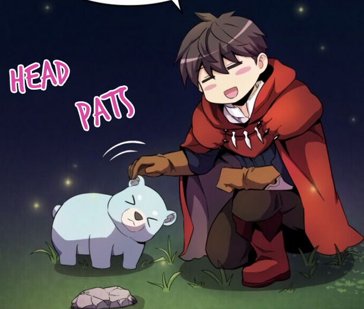

I like to check up on what's happening on different indieweb corners and today I decided to check out what's on Bear blog. I went to their discover page and I checked out what's trending. Other times I check what's new but this time it was what's on top.
The first thing that grabbed my attention was Herman's blog and his experience with being forced off his iPhone 8. I experienced something similar with my own iPhone 8 except I jumped off that ship as soon as Apple dropped support for it. There was finally USB-C on the iPhone(thanks to the EU), the new shiny cameras were tempting, and I needed more storage to store my photos since I don't like cloud solutions. In hindsight, I probably could've stayed on it for one more year but I didn't want to risk the negatives. Technically, I don't know why it's impossible to maintain those phones for longer except due to Apple policy and the burden they put on developers to renew their codebases with whatever Apple pushes onto them. I wish Linux phones become a thing.
StackOverflow has been unusable from my personal perspective and from the perspective of the person who made a blog solely to grief the SO site. Oftet times I the information that I need is for version that is not there or too old for the questions. At some point I thought about building reputation by answering questions on StackOverflow but the whole website had become so crusted that I didn't see a point in doing it. Nowadays, I go to LLMs for solving some tech issues and only after I see the total garbage that they produce do I check other sources like SO or tool forums. I hope their switch up their culture and policy but that's harder than letting it die by itself.
This blogpost about coffee shops was a nice reminder about third places like libraries, coffee shops and pubs. I've thought about going to the local library or coffee shop to work or just hang out but being self-conscious, having a janky laptop, lack of financial security has prevented me from doing so. Hopefully I can overcome those. Also, yay for webrings.
Zypper recollects a bad memory of a conversation with an old guy who allegedly tried to talk to them about "the Jewish problem". I assume the conversation was in German and the old person had Nazi beliefs but my naive self can't help but wonder if that's what they truly thought about. From the article I also found an interesting link about Musk interfering with X's(Formerly Twitter's) algorithm to boost his and other conservative voice's posts. Truly sad if true because there's so many interesting things you can do with the recommendation algorithm but boosting one group's voices is not one of them.
Ava seems to be a Bearblog celebrity (in a good way) since I've seen her blog getting mentioned several times in different blogs and it's interesting to see the community building in action. An example of an Ava<->Bear community interaction were replies back and forth between Zypper and Ava on this topic.
The post itself is about online addiction which I assume I have as well. My addiction goes worse when I'm feeling lost in life which has definitely happened during undegrad, grad school, and unemployment. Recently, I've been doing a bit better because I was able to steer my energy into this blog and other projects. It also helps that my friends and family have gotten busier in life and they don't spend as much time online so I don't feel obligated to be there as well.
Sam's post touches upon the topics of online addiction that Ava also talked about, enshittification, slow web, indie web. They also mention a website that I haven't seen in a while are.na.